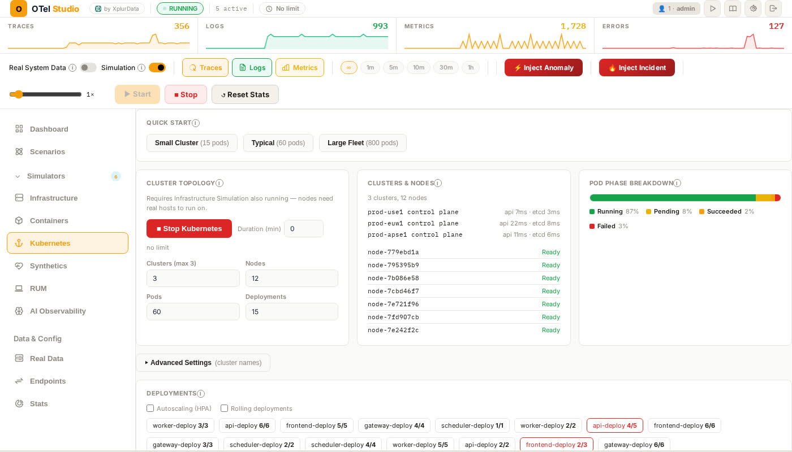
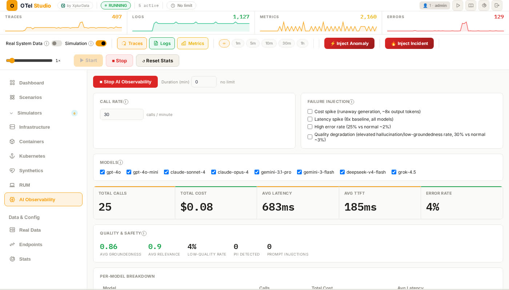
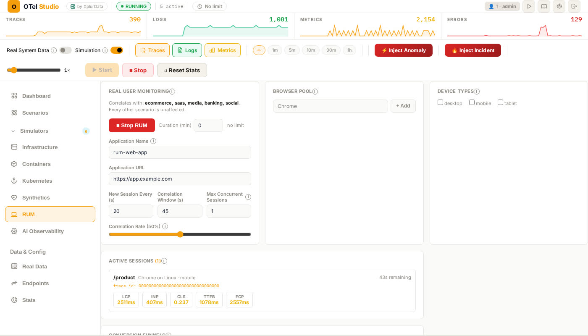
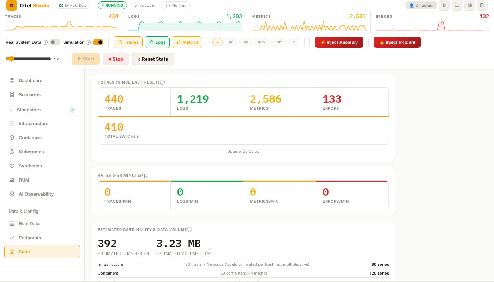

Everything OTel Studio can do
OTel Studio is a telemetry source: you point it at an OTLP endpoint and it produces traces, logs and metrics that look like they came from a real, busy system. This page walks through everything it can do. For step-by-step instructions see the documentation and the guides.

Application scenarios: 30 realistic topologies
A scenario is a service topology that produces genuine request chains: a root span, child spans across services with correct parent-child relationships, one correlated log record for every service a request visits, and matching metrics. They are grouped the way teams think about systems — Web App (e-commerce, SaaS, media streaming, banking, social), Infrastructure (syslog, Kubernetes control plane, database cluster, message queue, CI/CD), APM (Java, Node.js, Python ML, Go, .NET), Cloud Native (IoT, serverless, service mesh, security/SIEM, mobile), Chaos / Stress and GenAI. See the full scenario reference.
- Per-scenario control: send interval, batch size and error percentage for each scenario, enabled independently, with Select all / Deselect all per group.
- Advanced settings per scenario: geo/IP simulation (realistic regional ranges, or safe RFC 5737 test ranges), synthetic PII (names and emails on reserved example domains, marked
pii.synthetic), custom attributes, span-duration overrides and weighted HTTP status codes. - Sequential mode: run one scenario at a time and rotate through the enabled ones on a timer.
- Quick-start templates: Startup, Mid-size SaaS, Enterprise and Regulated Finance each set a scenario mix and an infrastructure profile in one click.
- Signal ratios that look real: logs outnumber traces, which outnumber metric points, the way they do in production.

An estate behind the traffic: six simulators
Real systems are not just request chains. Six simulators generate the estate underneath, and they all draw from one shared pool of identities — so the host in a trace, the container on that host and the pod in that cluster are the same host, container and pod everywhere in your backend. Each simulator has its own Start and Stop and an optional duration, independent of the global run.

- Infrastructure — a fleet of 20 to 2,000 hosts with a realistic cloud provider, region and OS distribution (Linux, Windows, Unix), configurable CPU and memory tiers, host roles and fleet churn. Each host emits CPU, memory, disk and network metrics plus swap/paging and iowait that move together with real pressure, and OS-level logs.
- Containers — a container fleet placed on those hosts, with a real lifecycle (running, restarting, OOM-killed, crashed) and Docker's event vocabulary, CPU throttling metrics and memory as a percentage of limit — the signal that predicts an OOM kill.
- Kubernetes — clusters with control-plane and etcd health, nodes with health conditions, pods with requests, limits and a computed QoS class, deployments with HPA-formula autoscaling and rolling updates, and an events feed that uses real Kubernetes reason strings. Pod → node → infrastructure host all line up.

- Synthetics — HTTP checks against your own URLs from simulated locations, using the OpenTelemetry Collector's
httpcheck.*metric names, with status, body and response-time assertions, retry-before-fail, multi-step checks that pass values between steps, and SSL-expiry warnings. - RUM — concurrent browser sessions with Core Web Vitals (LCP, INP, CLS, TTFB, FCP), rage and dead clicks, JavaScript errors with stack traces and fingerprints that group recurring errors, and named funnels. Sessions share trace IDs with backend traces. An optional real-browser mode drives Chromium against your own instrumented site (
-browserimage). - AI Observability — LLM calls across eight models from five providers emitting the OpenTelemetry GenAI metrics, plus cost, groundedness, relevance, PII and prompt-injection signals under a clearly separate
llm.*namespace, with four switchable failure modes.


Break things on purpose
Dashboards look fine when nothing is wrong. OTel Studio makes things go wrong in controlled, repeatable ways:
- Inject Anomaly — for 30 seconds traffic is multiplied by ten, 80% of requests fail and some spans take two to eight seconds. Use it to test alert rules, burn-rate alerts and error dashboards.
- Inject Incident — one host from your fleet degrades for 60 seconds, and the services and pods running on it show matching errors and latency. One root cause, symptoms in traces, metrics and logs — the story a real outage tells.
- Chaos scenarios — Error Storm (80% failures), Latency Spike, Traffic Surge (10× volume), Cascading Failure (75% errors with circuit-breaker fallback) and Cardinality Burst (random user IDs per request).
- GenAI failure modes — runaway cost, latency spikes, elevated error rate and quality degradation.
Scale and control

- Speed multiplier from 0.25× to 10× across all scenarios, without changing batch size or error rate.
- Time limit from one minute to one hour (and up to 24 hours through the API), with a countdown, and an optional webhook when a run ends.
- Volume estimator — estimated time series and data volume per day for the simulators you have enabled, before you send anything.
- Live activity stream with type filters, pause, copyable trace IDs and a CSV export.
- Signals on demand — switch traces, logs and metrics on and off independently.
- Scale out — run several containers, or up to 25 concurrent runs per Job API instance.
Send anywhere, securely

- Standard OTLP over gRPC, HTTP with protobuf (the default) or HTTP with JSON. A base URL gets
/v1/traces,/v1/logsand/v1/metricsadded; a full per-signal URL is respected. - Authentication that matches real backends — a bearer token, any number of extra headers (tenant IDs, API keys, datasets), and TLS or mutual TLS with your own CA and client certificates. See the guide.
- Thirteen presets fill in the URL, protocol and the right authentication fields — see Backends.
- Fan-out — activate several endpoints and every signal goes to each of them, each with its own credentials.
- A Test button that tells you why — accepted, reachable but credentials refused (HTTP 401/403), reachable but not OTLP (for example HTTP 404), or unreachable, with the reason.
Automate
- Command-line mode runs for a fixed time and exits with a status code (0 success, 1 bad arguments or config, 2 collector unreachable, 3 error during the run) — a pass/fail step for CI. Flags cover endpoint, protocol, headers, signals, hosts, regions, CPU and memory tiers, OS mix, rate and error rate, and the standard
OTEL_EXPORTER_OTLP_*variables are read. - Job API — start, list, inspect and stop up to 25 concurrent runs over HTTP, each with its own endpoint, credentials and settings.
- Control API and config files — everything the UI does is an API call, and complete setups export and import as JSON. See the CI guide.
Operate it safely
- Small, hardened image — about 290 MB for
linux/amd64andlinux/arm64, running as an unprivileged user, scanned for vulnerabilities and published with a software bill of materials. - Secrets handled with care — endpoint tokens and header values are encrypted at rest, never shown again and never exported. Sign-in attempts are rate limited, sessions use
HttpOnly,SameSitecookies, and responses carry security headers. - Roles — admin and user accounts, each with their own scenarios, endpoints and counters.
- Private by design — the server contacts only the endpoints you add, and the web interface loads nothing from third-party hosts, so it works on an isolated network.
- Easy to filter out — everything carries
synth.generated: trueandsynth.generator: otel-studio. - Real data too — optionally tail log files and read Docker container logs and metrics from the host alongside the simulation.
Guided and discoverable
A fifteen-step product tour highlights every control and page on first sign-in (and replays from the top bar). The documentation is built into the application, and the website documentation adds a feature map, use-case recipes and troubleshooting.